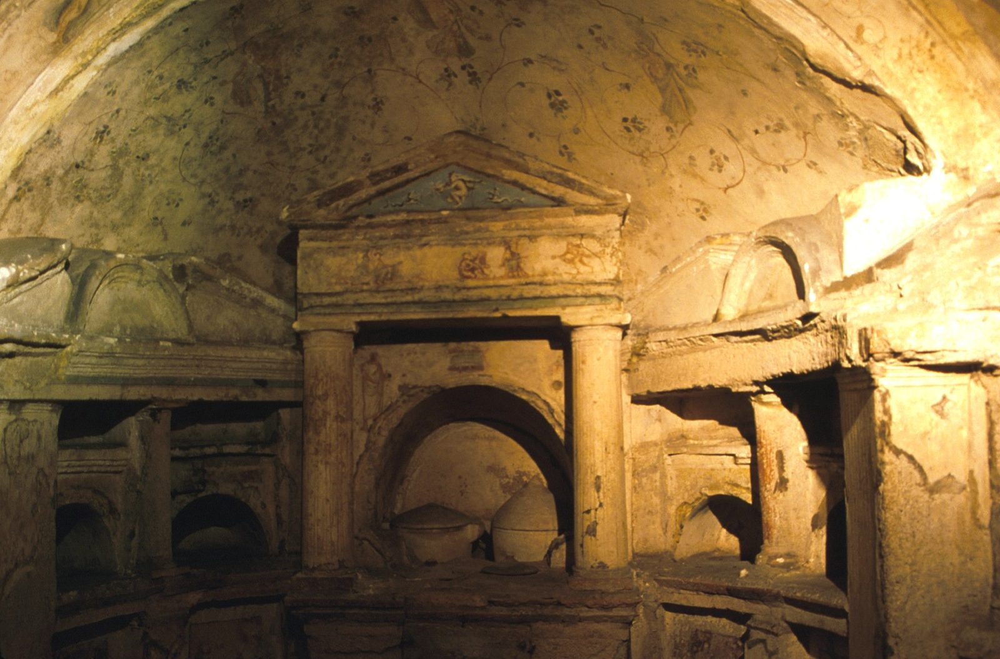

Unit 6 · Slavery in ancient Rome · Lesson 4
Men, women and children: who were the enslaved?
Most of what survives was written by owners. What can it tell us about the men, women and children they enslaved, and what does it leave out?
Year 11 Ancient History · Present with → or space · Read on a phone with R

Connect · 3 minutes · books closed · everyone writes · press K for the timer
Numbers with an owner: what did you remember from Lesson 3?
Give one older and one recent estimate of Italy’s enslaved population, with the historian.
Behind every one of those numbers are people. Today we meet some of them: men, women and children.
- 1An older estimateHopkins (1978): about 2 million enslaved people out of 6 million, a third, at the end of the 1st century BCE; Brunt (1971): 3 million out of 7.5 million (both as Bradley, 1989, reports them).
- 2A recent estimateScheidel (2011): perhaps 1–1.5 million at the peak, some 15–25 per cent, from a model that “entails huge margins of error”.
- 3What a claim about numbers needsAn owner and a year, a range or “about”, and one hedge (Lesson 3).
Learning intentions and success criteria · 2 minutes
Today’s goals
- understand who was enslaved: men, women and children
- account for how the sources represent each group
- describe the evidence for enslaved men, women and children
- explain why women and children are under-recorded
- name people and their work in precise, respectful noun groups
Syllabus outcomes: AH-11-03 explains the role and significance of forces, features, events, individuals and groups in shaping the past · AH-11-04 accounts for the different perspectives of individuals and groups in their historical context · AH-11-07 communicates historical understanding, applying historical knowledge, terms and concepts. Life Skills: AH-LS-05 describes features of places or societies in the ancient world · AH-LS-11 communicates information about the past using historical terms and concepts.
Note-making · the routine for the whole course
How to structure your notes
questions and key terms, written after
short phrases, arrows (→ leads to), abbreviations (c. = about; ↔ = compared with)
- 1A new pageA cue column about a quarter of the page wide; title and date at the top; room for a summary at the bottom.
- 2Listen and look, then writePhrases, not sentences. Today: for every source, who wrote it, who is counted and who is missing.
- 3Write your own notes at the ✎ checkpointThen compare with the model notes, one row at a time. Add what you missed in a second colour.
- 4Write the cue questions afterwardsUse exam verbs: explain, account for. To revise, cover your notes and answer the cues.
- 5Finish with a three-sentence summaryOne checkpoint today: who is counted, who is missing. The “who is visible, who is missing?” grid in your booklet is your notes for the We do.
Key vocabulary · add to the unit word wall
Words for naming people and their work
| From the unit list | Meaning |
|---|---|
| Account for (NESA) | ‘Account for – state reasons for, report on.’ — Department advice: give the reasons, including why a person or group held a view. |
| Noun group | A noun with the details packed around it: ‘an enslaved housekeeper on the olive estate Cato prescribes’. |
| Register | The formality and respect of the language: ‘enslaved people’, never ‘it’ for a person. |
| Enslaved person / slave | ‘Enslaved person’ (the syllabus’s term) keeps the person in view; ‘slave’ is used when quoting sources and in established terms (‘slave wars’). |
| Content terms | Meaning |
|---|---|
| Verna | An enslaved person born in the owner’s household. |
| Vilicus / vilica | The enslaved overseer and housekeeper of a farm. |
| Familia | A Roman household, including the enslaved people in it. |
| Added today | Meaning |
| Epitaph | Words cut on a tomb to commemorate the dead: a name and, sometimes, more. |
| Vicarius (plural vicarii) | An enslaved person who worked under another enslaved person: Bodel calls them ‘under-slaves’. |
| Under-recorded | Mentioned in the sources less than the part people played would lead us to expect. |
1 · Who is counted? · I do — think aloud · Cato’s model staff · 3 minutes
Cato’s staff list: which roles are counted, and who is absent?
This is the proper equipment for an oliveyard of 240 iugera: An overseer, a housekeeper, 5 labourers, 3 teamsters, 1 muleteer, 1 swineherd, 1 shepherd — a total of 13 persons;
Cato, De Agri Cultura 10.1, about 160 BCE, a model staff for an estate of 240 iugera (about 60 hectares), not a record of a real farm · trans. W. D. Hooper and H. B. Ash (Loeb, 1934)
See that the housekeeper performs all her duties. If the master has given her to you as wife, keep yourself only to her.
Cato, De Agri Cultura 143.1, addressed to the overseer · trans. W. D. Hooper and H. B. Ash (Loeb, 1934)
- 1Who wrote it, and whyAn owner, advising owners: a model staff, so what he counts is the work an estate needs.
- 2Which roles are countedJobs: overseer, labourers, teamsters, muleteer, swineherd, shepherd. Thirteen persons, none named.
- 3The one womanThe housekeeper; 143.1 adds that the master might choose her partner: “If the master has given her to you as wife”.
- 4Who is absentChildren. The list shows none: that is the owner’s choice of what to count, not proof that none lived there.
Which roles are counted, and who is absent?
Jobs are counted: thirteen persons, all by their work and none by name. One woman appears, the housekeeper, and no children. The list shows the work an owner wanted done, so it tells us little about who the people were.
1 · Who is counted? · I do — think aloud · an epitaph names sixteen assistants · 3 minutes
Musicus Scurranus’s sixteen assistants: who is named, and who is last?
Musico Ti(beri) Caesaris Augusti / Scurrano disp(ensatori) ad fiscum Gallicum / provinciae Lugdunensis / ex vicaris eius qui cum eo Romae cum / decessit fuerunt bene merito …
… Hedylus cubicu(larius) / Firmus cocus / Secunda
In English: to the well-deserving Musicus Scurranus, an enslaved financial official (dispensator) of the emperor Tiberius, in charge of the Gallic treasury in Lugdunensis, from those of his vicarii who were with him in Rome when he died.
CIL VI 5197 (= ILS 1514), Rome, 14–37 CE: Latin as edited by H. Dessau, Inscriptiones Latinae Selectae, vol. 1 (1892), no. 1514 (abbreviations expanded for this lesson), with J. Bodel, “Slave labour and Roman society” (2011), p. 322. The English is a gloss written for this lesson.
Who is listed last, and what is missing from her line? What might that mean?
Secunda, the only woman of the sixteen, is named but given no job. Bodel asks whether she had a more personal relationship with Scurranus or whether her services were ‘more discreetly left unspecified’, and says she, not the men, ‘represents the normal situation’: most enslaved people in epitaphs have no occupation given.
Notes checkpoint · I do · 2 minutes · cue: who is counted?
Who is counted, who is missing?
2 · Owners’ words · We do — supported reading · 4 minutes · underline what the owner wants, box who gains, circle each woman or child
Two owners on enslaved women and children: what did they want?
The foremen are to be made more zealous by rewards, and care must be taken that they have a bit of property of their own, and mates from among their fellow-slaves to bear them children; for by this means they are made more steady and more attached to the place. Thus, it is on account of such relationships that slave families of Epirus have the best reputation and bring the highest prices.
Varro, De Re Rustica 1.17.5, 37 BCE, in a dialogue about farming (the speaker is Scrofa), on enslaved foremen · trans. W. D. Hooper and H. B. Ash (Loeb, 1934)
To women, too, who are unusually prolific, and who ought to be rewarded for the bearing of a certain number of offspring, I have granted exemption from work and sometimes even freedom after they had reared many children. For to a mother of three sons exemption from work was granted; to a mother of more her freedom as well. Such justice and consideration on the part of the master contributes easily to the increase of his estate.
Columella, De Re Rustica 1.8.19, mid-1st century CE, an owner describing what he did on his own estates · trans. H. B. Ash (Loeb, 1941)
What did these owners want from enslaved women?
Varro’s speaker wants foremen to be ‘more steady and more attached to the place’, so he advises giving them mates ‘to bear them children’. Columella rewards mothers of three sons, or more, because such treatment ‘contributes easily to the increase of his estate’. In both, women matter for what they do for the owner’s farm.
Whose perspective is missing?
The women’s and the children’s. Both writers are owners; neither says what the women wanted or felt, and the mates are chosen for them. We see them only through the owner’s advice.
2 · Owners’ words · We do — a historian’s caution · 2 minutes · circle every word that shows how sure he is
Does silence in the sources mean there were few women?
… female slaves may have been comparatively rare, or in fact ubiquitous but less skilled or tacitly taken for granted.
W. Scheidel, “The Roman slave supply” (2011), p. 307, on the few jobs for women in inscriptions and the focus on male labour in the farming writers. Ubiquitous: found everywhere.
Ancient sources consistently convey the impression that women and children were over-represented among war captives (and the victims of kidnapping) …
W. Scheidel, “The Roman slave supply” (2011), p. 307. Over-represented: more of them than their share of the population.
… Columella offered rewards to slave mothers of three and four children (or sons?), it is unclear whether we should take this to mean that such cases were rare or common.
W. Scheidel, “The Roman slave supply” (2011), p. 306. On p. 307 he adds that “representative quantifiable data” on the families of enslaved people “are sorely lacking”.
What is Scheidel cautioning historians about?
That the sources’ silence is not proof. Women may have been ‘comparatively rare’ or ‘ubiquitous’ but ‘tacitly taken for granted’; the texts give an ‘impression’; Columella’s case may have been rare or common. His hedges (may have been, impression, unclear) show a historian matching certainty to thin evidence.
We do — pairs complete the grid in your booklet: who is visible, who is missing? · 4 minutes, then 1 minute to discuss
Who is visible, and who is missing?
| Group | What the sources show | Whose view, and what is missing |
|---|---|---|
| Men | Cato 10.1: overseer, labourers, teamsters, muleteer, swineherd, shepherd, by job and unnamed. Scurranus’s epitaph: fifteen men, each named with a job. | An owner’s list of work; in the epitaph, the assistants record their own names and jobs. Mostly roles, so little of their lives. |
| Women | Cato 10.1 and 143.1: one woman, the housekeeper, whose partner the master might choose. Varro: mates for foremen. Columella: rewards for mothers. Secunda: named, no job title. | The owners’ view only. Scheidel: women ‘may have been comparatively rare, or in fact ubiquitous but less skilled or tacitly taken for granted’. |
| Children | Cato 10.1: none shown. Varro: ‘to bear them children’; families that ‘bring the highest prices’. Columella: mothers rewarded for sons reared. | Seen through their mothers and as a gain to the estate; none named. Scheidel: it is ‘unclear’ whether Columella’s cases were rare or common. |
Look across the rows: through whose eyes do we see each group, and which row was hardest to fill? Your answer to that is where your paragraph starts.
3 · You do · Writing focus · 7 minutes · I do → We do → apply
Writing focus: name the person, not just the label
The rule in one line: a precise, respectful noun group keeps the person in view: a describer (enslaved), the role, and where the evidence comes from. Never ‘it’; never just ‘the slaves’.
Worked example 1 · written for this lesson · from the Cato list
a slave woman becomes an enslaved housekeeper on the olive estate Cato prescribes
Describer: ‘enslaved’ names what was done to the person
Role: the source’s own word for the work
Evidence: where the source places the person, and no further
Worked example 2 · written for this lesson · on the workers in Cato’s list, not the women and children of today’s question
Cato’s model staff for a 240-iugera olive estate lists ‘5 labourers, 3 teamsters, 1 muleteer’, but these workers appear only as roles, so a historian must look behind the list for the people.
Two faulty sentences. Fix each so the person stays in view:
- “The slaves in Cato’s list are just workers.”
- “A child born in the household was a verna, and it belonged to the owner.”
Check: ‘enslaved’ as the describer · the person, not ‘it’ or ‘the slaves’ · where the evidence is from.
The thirteen persons on the olive estate Cato prescribes appear only by their jobs, so his list shows the work an owner wanted, not who the people were.
An enslaved child born in the owner’s household was called a verna, and in law the owner owned that child.
Name every person or group in your paragraph in a noun group like this: “[Source] records [an enslaved … in …], but …, so …” Your Writing toolkit (booklet pages 3–4): attribution verbs.
3 · You do · 20 minutes · check first · then write for 14 · press K for the timer (20)
Account for the ways the sources represent enslaved women and children.
Check first: what does this question ask you to do?
- Verb
- account for: NESA, ‘Account for – state reasons for, report on.’ So report the ways, and give the reasons for them
- Topic
- how the sources represent (present) enslaved women and children, not what really happened to them
- Limits
- today’s sources; women and children, not men; Scheidel’s caution about what the sources cannot show
- Do
- a Judge that names the main way and the main reason; two sources, each with who wrote it and why; what they cannot show; weigh which reason matters most
Varro and Columella write about enslaved women’s relationships and children in the course of advice on managing an estate. Analyse what this reveals about owners’ perspectives, and what the women’s silence means for a historian.
- Judge: the main way the sources represent them, and the main reason (a degree word if you can).
- Evidence: two sources, each with its writer, date and purpose, and a precise, respectful noun group for the people.
- Analyse why each writer shows them that way. Evaluate with Scheidel’s caution: what the sources cannot show. Resolve: which reason matters most.
First sentence: “[Source] records [noun group], but …, so …” Noun-group bank:
3 · You do · self-check · 3 minutes · then, after you write, compare with a model
Check your paragraph
The sources represent enslaved women and children mainly through their owners’ interests, because most of them were written by owners advising other owners. Cato’s model olive estate lists one woman, the housekeeper, and no child; a speaker in Varro’s dialogue advises giving enslaved foremen ‘mates from among their fellow-slaves to bear them children’ so that they become ‘more steady and more attached to the place’; and Columella, describing his own practice, rewarded mothers of three sons or more, adding that such ‘justice and consideration’ on a master’s part ‘contributes easily to the increase of his estate’. In each case women and children are visible only for what they add to the estate, and none of the three says what the women wanted. Scurranus’s epitaph is a different kind of source, set up by his sixteen enslaved assistants, who recorded their own names and jobs, yet Secunda, the only woman, is listed last with no job title, which Bodel (2011) calls the normal situation. Scheidel (2011) cautions that women ‘may have been comparatively rare, or in fact ubiquitous but less skilled or tacitly taken for granted’, so the sources’ silence cannot show how many there were. The sources therefore show enslaved women and children chiefly as their owners’ interests required, and a historian can only partly recover who they were.
Judge “only partly”, or rank a different reason first, if your evidence supports it.
Finish your notes If time · or at home
Summary: three sentences
- Who does Cato’s list count, and who is missing?
- What do Varro, Columella and Scurranus’s epitaph show about women and children?
- What does Scheidel’s caution mean for a historian?
Cato’s model olive estate counts thirteen persons by their jobs, with one woman, the housekeeper, and no child, because an owner counted the work he needed. Varro’s speaker and Columella mention enslaved women and children only as part of managing an estate, and Scurranus’s epitaph names Secunda but gives her no job, as most epitaphs do for enslaved people. Scheidel cautions that this silence does not show that women were few, so historians must say what the sources cannot show.
Check for understanding · hinge question · hold up your A, B, C or D card on “3, 2, 1, show” · 4 minutes
Why are enslaved women hard to see in the sources?
- ABecause owners wrote most sources and recorded mainly men’s farm work.
- BBecause few women were enslaved, so there was little to record.
- CBecause Roman law did not allow owners to enslave any women.
- DBecause epitaphs and inscriptions never record the name of enslaved women.
Most of our sources are owners’ writing about the work they wanted done. B is wrong: Scheidel warns that silence is not proof: women ‘may have been comparatively rare, or in fact ubiquitous’. C is wrong: Cato’s housekeeper is a woman, and Gaius (Lesson 2) says that, as a rule, a child follows an enslaved mother’s status. D is wrong: Secunda is named on Scurranus’s epitaph.
Exit ticket · 3 minutes · before you leave
One precise, respectful noun group
Write one noun group for a person or group you met today, and say in a few words what the source records about them. Name the person’s role, say ‘enslaved’, and say where the evidence is from.
‘Enslaved’ (or the source’s own word for the person); a role or a name the source gives (Secunda, housekeeper, mother of three sons); and where the evidence comes from, for example “Secunda, one of the sixteen enslaved assistants of Musicus Scurranus” or “the enslaved housekeeper on the olive estate Cato prescribes”. No ‘it’; no bare ‘the slaves’; and, for the strongest answers, what the source leaves out.
Then check yourself against today’s three “I can” statements. Next lesson: from mines to the household: the work of enslaved people.
Practice and review · 1 of 4 · true, false, justify
True or false? Justify your answer
- 1Cato’s list for an olive estate counts thirteen persons by their jobs and names none of them. True — 10.1: “a total of 13 persons”, by role only; it is a model list, not a real farm.
- 2Cato’s list for an olive estate shows several children. False — it shows one woman, the housekeeper, and no child; that is the owner’s list, not proof that no children lived there.
- 3A speaker in Varro’s dialogue advises giving foremen mates “to bear them children”, because it makes them more steady. True — 1.17.5: it makes foremen ‘more steady and more attached to the place’; the advice is about the foremen, not the women.
- 4Columella says he freed every enslaved mother. False — he describes exemption from work for a mother of three sons, and freedom as well for a mother of more; Scheidel asks whether such cases were rare or common.
- 5Secunda was the only woman among Scurranus’s sixteen assistants, and she is listed last with no job title. True — Bodel (2011), p. 322, reading CIL VI 5197.
- 6Scheidel shows that enslaved women were few. False — he says women ‘may have been comparatively rare, or in fact ubiquitous’, and sees ‘no good reason to assume that male slaves greatly outnumbered unfree women’.
Practice and review · 2 of 4 · writing
Noun groups, and a sentence to fix
- “the slaves on Cato’s farm”
- “a slave doctor” (one of Scurranus’s assistants, named Agathopus)
- “slave children” (in Varro’s advice about foremen’s mates)
Frame: “[Name], an enslaved [role] [where the source places them].”
1: the thirteen persons on the olive estate Cato prescribes. 2: Agathopus, an enslaved doctor among the sixteen assistants of Musicus Scurranus. 3: the children whom Varro’s speaker expects the foremen’s mates to bear.
“Columella says the slave women had babies for the owner and got a reward.” Make it attributed, hedged and respectful.
Columella, an owner describing his own practice, says he gave exemption from work to a mother of three sons and freedom as well to a mother of more, though Scheidel (2011) asks whether such cases were rare or common.
Practice and review · 3 of 4 · extension
What do owners’ words reveal, and what does silence hide?
Varro and Columella write about enslaved women’s relationships and children in the course of advice on managing an estate. Analyse what this reveals about owners’ perspectives, and what the women’s silence means for a historian.
Both writers turn family life into a tool of management: Varro’s speaker advises giving foremen ‘mates from among their fellow-slaves to bear them children’ because this makes the foremen ‘more steady and more attached to the place’, and Columella ties his rewards to the children a woman has reared, adding that such consideration ‘contributes easily to the increase of his estate’. This reveals what owners valued, the estate’s profit, but not what the women felt or chose. The women’s silence therefore limits a historian: Scheidel (2011) warns that women ‘may have been comparatively rare, or in fact ubiquitous but less skilled or tacitly taken for granted’, so the texts cannot show their numbers or their own views. A historian can read the owners’ intentions fairly securely, but can reach the women only by asking what the sources leave out.
Practice and review · 4 of 4 · cover your notes and answer from memory
Quick checks
- Who does Cato’s list for an olive estate count, and who is missing? Thirteen persons, counted by their jobs and not named. One woman, the housekeeper; no child. It is an owner’s model list, not a real farm.
- What does Scurranus’s epitaph show, and who is listed last? Sixteen enslaved assistants (vicarii) set it up and had their own names and jobs inscribed on it. Secunda, the only woman, is last, with no job title.
- Why is Secunda’s line typical, according to Bodel? Most enslaved people commemorated in epitaphs have no occupation given, and only 10 per cent of all epitaphs from Rome give one.
- What did Varro’s speaker and Columella want from enslaved women? Varro’s speaker: mates to bear foremen’s children, so the foremen are steadier and more attached to the place. Columella: to reward mothers of three sons or more, for the estate’s increase. In both, the owner’s gain.
- What is Scheidel’s caution about women in the sources? Silence is not proof: women may have been comparatively rare, or ubiquitous but less skilled or tacitly taken for granted.
- What makes a noun group precise and respectful? ‘Enslaved’ as the describer, the role or name from the source, and where the evidence is from; never ‘it’ or a bare ‘the slaves’.
Sources and credits
Where everything comes from
Cato, De Agri Cultura 10.1 and 143.1; Varro, De Re Rustica 1.17.5: trans. W. D. Hooper and H. B. Ash (Loeb Classical Library, 1934, public domain), LacusCurtius (Cato), LacusCurtius (Varro). Columella, De Re Rustica 1.8.19: trans. H. B. Ash (Loeb, vol. I, 1941, public domain), LacusCurtius. The epitaph of Musicus Scurranus, CIL VI 5197 (= ILS 1514): Latin text from H. Dessau, Inscriptiones Latinae Selectae, vol. 1 (Berlin, 1892), no. 1514 (archive.org), compared with A. Kolb, “Mobility, roads, and milestones”, in A. Mullen (ed.), Social Factors in the Latinization of the Roman West (Oxford University Press, 2023), p. 121 n. 9; English glosses written for this lesson.
Modern historians, quoted briefly: J. Bodel, “Slave labour and Roman society”, p. 322, and W. Scheidel, “The Roman slave supply”, pp. 289 and 306–7, in K. Bradley and P. Cartledge (eds), The Cambridge World History of Slavery, vol. 1 (Cambridge University Press, 2011); K. R. Bradley, Slavery and Rebellion in the Roman World (Indiana University Press, 1989), p. 146, reporting K. Hopkins, Conquerors and Slaves (1978) and P. A. Brunt, Italian Manpower (1971). The Columbarium of Pomponius Hylas: Wikipedia, “Columbarium of Pomponius Hylas”, and Roma Capitale’s tourism site, Turismo Roma. The NESA Glossary of key words (definitions quoted word for word).
Outcomes and content: NSW Education Standards Authority (NESA), Ancient History 11–12 Syllabus (2024). © NESA.
- A Roman burial chamber: rows of niches for urns in the Columbarium of Pomponius Hylas, near the Porta Latina, Rome (built about 14–54 CE) · Photo: Tyler Bell · CC BY 2.0 · source

All images are public domain or openly licensed, and were resized or cropped for the web. Each is shared under the licence shown.